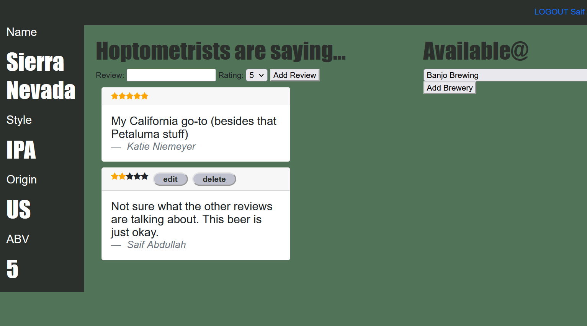
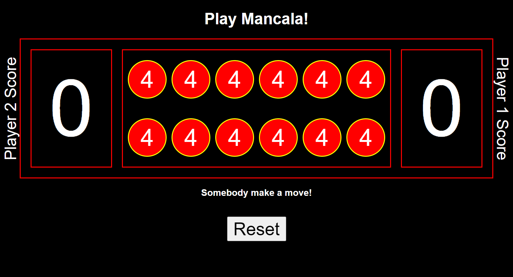
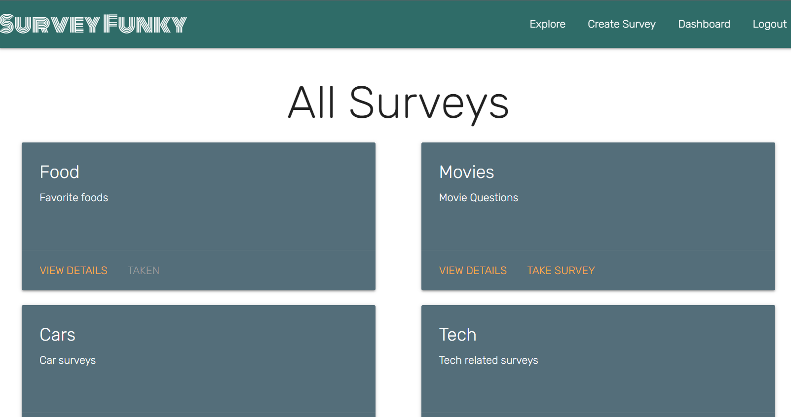

Software Engineer with a decade of experience in technology consulting building ERP
systems for Fortune 500 companies. I bring deep technical and strategic knowledge, as well as a
wealth of customer engagement experience that helps me ensure that the client’s needs are met.
Continuous learner and enjoy solving complex problems using technology. Pride myself in exhibiting
empathy, creativity and professionalism.
Skills:
Languages: JavaScript, JSX, AJAX, HTML, CSS, Python, SQL, Visual
Basic (VBA)
Frameworks and Libraries: React.js, Express.js, Django, Mongoose
Databases: MongoDB, PostgreSQL, Microsoft SQL Server, SSIS,
Oracle Database
Data Integration Tools: Oracle Data Integrator, SQL Server Data
Tools
Development and Debugging Tools: GitHub, VS Code, Chrome
Developer Tools
Business Intelligence: Tableau, SQL Server Reporting Services,
Oracle Business Intelligence, Endeca
Software Engineering Experience

Ideate
React - MongoDB - Express.js - Node.js
Mongoose - Heroku

Web app built using Express.js and MongoDB and deployed on Heroku that allows users to find
beverages, add reviews and
update associated breweries. Also includes ability to refresh breweries select list via an API.
Adventour
Express.js - RESTful routing - MongoDB
Mongoose - OAuth - Heroku - Node.js

Browser-based strategy game deployed on GitHub Pages that relies entirely on JavaScript to control DOM events
Mancala
JavaScript - HTML - CSS - GitHub Pages
Browser-based strategy game deployed on GitHub Pages that relies entirely on JavaScript to control DOM events

Web app that allows users to create and take surveys. Developed using the Django framework -
data is stored on SQLite, whilst the application logic is coded
using Python and the front-end designed with Django templating language.
SurveyFunky
Django - Python - PostgreSQL
JavaScript - HTML - CSS - Heroku
Marketing & Business Intelligence Experience
Behavioral
Research
Various Social Media Tools
Enterprise
Reporting
Oracle Business Intelligence
Oracle Database - WebLogic - Tableau
Interactive
DataViz
Oracle BI and Tableau
Unstructured
Data
Endeca Information Discovery
Education
| General Assembly | Remote |
|---|---|
| Software Engineering Immersive | 05/2022 |
| Georgia Institute of Technology | Atlanta, GA |
| MS, Management (Marketing) | 12/2012 |
| BS, Biomedical Engineering | 05/2011 |
Certificates
| Tableau | Remote |
|---|---|
| Tableau Desktop Certified Associate | 03/2021 |
| MIT Professional Education | Remote |
| Deep Learning for AI and Computer Vision | 07/2020 |
| Modeling and Optimization for Machine Learning | 06/2020 |